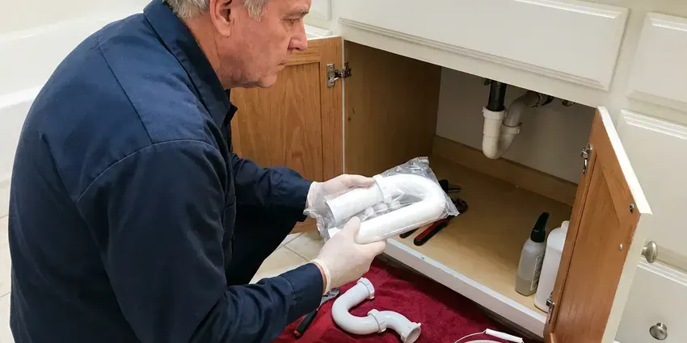

Urinal Installation in Warwick, RI
We install commercial and home urinals all over Warwick, RI.
- Licensed & Insured
- Local Warwick Plumbers
- After-Hours Work
- Workmanship Guaranteed

Urinal Installation in Warwick, RI With a Flat Price
Send the fixture count and layout, and you will get a written price.
Urinal Installation for Warwick, RI Businesses
Accessible restrooms need at least one urinal set low. ADA rules put the rim no higher than 17 inches above the floor, call for an elongated bowl that projects at least 13-1/2 inches from the wall, and keep the flush control within easy reach. We lay it out before framing. Clear floor space counts too.
Some of what we do:
- Install home urinals in garages and basements
- Replace high-flow urinals with low-flow fixtures
- Set floor-mounted carriers behind finished walls

Additional Bathroom Plumbing Services in Warwick, RI
From toilets to showers, our bathroom plumbing team in Warwick, RI repairs, installs, and replaces every fixture with clean, code-compliant work.


Customers
Why Choose JPN Plumbing for Urinal Installation in Warwick, RI?
Clean, odor-free restrooms start with the install. A urinal set out of level splashes, a gasket that is not seated lets sewer gas into the room, and a flush valve set too low leaves the bowl stained, so we check all of it before leaving. Then we flush it twenty times.
- Code Compliance, Trap size, venting and fixture height all meet code in Rhode Island.
- Water Savings, Waterless and low-flow options for busy restrooms.
- Durability, Floor-mounted carriers keep the urinal from loosening for years.
Citywide Coverage
Suburbs are on our regular route. Businesses outside city limits get the same response time and flat pricing. Give us the address to confirm.
Experienced Team
Clean work matters in a restroom. Floors and partitions get protected, and old fixtures and packaging leave with us. The restroom is ready to open.
Safety-First Approach
Backflow protection is built in. Every flush valve we install has a vacuum breaker set at the right height above the bowl, which keeps urinal water from being pulled back into the drinking water lines if pressure drops. We check it during setup.
Trusted Certified Warwick Plumbing Services Professionals
At JPN Plumbing, we take pride in licensed, certified plumbing services throughout Warwick, RI. Those papers on the wall mean something. Every repair, install and maintenance visit follows strict safety and quality rules, and the plumbers doing the work carry recognized industry credentials.
Call Us Now PHCC Plumbing Contractor Recognition
PHCC Plumbing Contractor Recognition Better Business Bureau (BBB) Accreditation
Better Business Bureau (BBB) Accreditation Angi Certified Pro
Angi Certified Pro ISO 9001 Quality Management Certification
ISO 9001 Quality Management CertificationUrinals We Install in Warwick, RI
Urinal Replacement and Upgrades in Warwick
Cracked or stained urinals are worth replacing. A hairline crack in vitreous china will eventually leak, and a bowl stained by years of hard scale often cannot be cleaned back to white, so a new fixture on the old carrier is usually the fastest fix. Carrier bolts get inspected first. Rusted bolts get replaced.

Urinal Brands We Install in Warwick, RI
Brand choice is mostly about parts support. We recommend brands whose valves and cartridges are easy to get locally, so repairs never wait. Each of those brands is routine for us. Spec sheets come first.
Commercial Urinal Installation in Warwick
Offices and restaurants want urinals that survive heavy use. We set vitreous china units on floor-mounted carriers, connect them with new outlet gaskets and stainless bolts, and pair them with a Sloan or Zurn flush valve sized to the bowl. We check partition spacing too. Most codes want 15 inches from centerline to the side.
Office and Restaurant Urinal Installation in Warwick
Restaurant restrooms see a lot of traffic in short bursts. Busy bars can see hundreds of flushes a night, so we install valves that recover fast and carriers that stay tight. We can fit tamper-resistant valves. Night installs keep you open.
Waterless Cartridge Urinals in Warwick
Each waterless brand uses its own cartridge. Falcon, Waterless Co, Kohler and Zurn units all trap odor differently, and the cartridge or sealing liquid has to be replaced after a set number of uses, which in a busy restroom can mean every few months. We set up a schedule with you. Spare cartridges should stay on site.
Old Urinal Removal and Replacement in Warwick
Old urinals come off harder than they went on. Rusted bolts and seized valves often have to be cut, so we protect the tile while working. We never reuse the old gasket. The flange gets cleaned to bare metal.
Sensor Urinal Installation in Warwick, RI
Sensor valves stop missed flushes and double flushes. Battery or hardwired valves get a tuned sensing range and an optional sanitary flush for idle periods. Expect years between battery changes. Hardwired units need an electrician first.

Residential Urinal Plumbing in Warwick, RI
Home urinals use the same rules as commercial ones. The drain is usually 2 inch, the trap is built into the china, the fixture needs a vent within code distance, and the flush valve needs either a 3/4 inch supply or a lower-flow residential valve on 1/2 inch. Permit rules apply too. We check that first.
Nearby Urinal Installers Near Me in Warwick, RI
Local supply houses matter on urinal jobs. We know which local counters stock valves and carriers, so missing parts arrive fast. Schedules hold that way.
Homeowners call us for urinals too. Garage and basement urinals get the same licensed plumbers and flat pricing as commercial work. One day covers most home installs.
JPN Plumbing at a Glance
- Licensed and insured plumbers serving Warwick, RI
- 24/7 emergency service with same-day scheduling
- Upfront, flat-rate pricing before work begins
- 4.8-star rated by 684+ Rhode Island customers
Warwick Map
Warwick Information
- Population
- 82,999
- Area codes
- 401/857/774
- Service area
- Warwick and towns within a 40 mile drive
- Nearby
- Cranston, East Providence, Providence, Tiverton
Switching to a high-efficiency urinal in Warwick, RI cuts water use sharply in any restroom that sees steady traffic.
Talk to a Plumber
Call JPN Plumbing for honest, reliable plumbing from people who know the trade in Warwick, RI.
Our Specialized Plumbing Services in Warwick, RI
At JPN Plumbing, we handle the full list of plumbing services across Warwick, RI. From leak detection to full system installs, our team works fast and charges fair prices on homes and commercial properties alike. Explore our core services below:


What Happens on a Urinal Job in Warwick, RI
Three steps, one written price, and a fixture that passes inspection.
Request a Quote
Call (401) 364-2507 and describe the restroom. You get a flat price.
Prep the Wall
We remove the old fixture and check the carrier, flange and supply.
Install and Test
The new urinal goes on, the valve gets tuned, and we test every connection.
Frequently Asked Questions About Urinal Installation in Warwick
Most urinal installs run $400 to $1,500. Swaps on existing lines cost the least, and new pipe work pushes toward the top. The price is set before work starts.
Yes, we install them regularly. The fixture goes on a carrier with a sloped drain, and we often leave a capped supply for later. The first cartridge is included.
New urinals almost always need one. New fixtures need permits and inspections, but like-for-like swaps often do not. We pull permits when needed.
Daily cleaning and a periodic check of the flush. Flush valve urinals need the control stop and inside parts checked once or twice a year, while waterless urinals need their cartridge replaced on the maker's schedule and should never be cleaned with harsh chemicals that damage the seal. We can train your staff.
They can be, with the right maintenance. They save the most water but need regular cartridge changes and good drain slope, or an ultra-low-flow flush model is better. We help you weigh it.
For leaks and stuck flush valves, yes. Running valves and leaking fixtures get same-day service, with a rebuild or a capped line if needed. Shut the valve stop while you wait.
Two layers of coverage. Our written labor warranty covers leaks and loose mounting from our work, and the fixture and flush valve makers cover defects in their own products, often for several years. Save the invoice.
Water, and upkeep. A flush urinal rinses the bowl from a flush valve on a 3/4 inch supply, while a waterless urinal uses a cartridge or sealing liquid that blocks sewer gas and has to be replaced on a schedule. The waterless type uses none at all.
What Our Customers Say About Our Plumbing Experts

Lisa C.
Water was pouring out from under the washing machine on a holiday weekend. JPN Plumbing talked me through closing the valves over the phone and had a plumber at the house within ninety minutes. It was a burst fill hose.
Emergency Plumbing · Central Falls, RIEmily R.
The shutoff valve under our kitchen sink snapped off in my hand on a Sunday morning. JPN Plumbing had someone out by early afternoon. He replaced both angle stops with quarter turn valves and showed me where our main shutoff was, which I honestly did not know.
Plumbing Repair · Tiverton, RI
Patricia H.
We had a slab leak that two other companies could not find. JPN Plumbing located it in under an hour with a listening device. They rerouted the line through the attic instead of breaking up the floor, so we kept our kitchen tile.
Slab Leak Repair · Providence, RI
Marcus H.
Grease from the fryer line kept clogging the kitchen drain at my diner. JPN Plumbing hydro jetted the line after closing, showed me the buildup on camera, and set us up on a quarterly cleaning so it does not catch us on a Friday again.
Drain Cleaning · Providence, RI
Greg S.
I manage a small strip center with six tenants. JPN Plumbing handles our annual backflow testing and fixed a recurring clog in the shared sewer line that had been backing into the nail salon. Their reports come in clean and on time.
Commercial Plumbing · Cranston, RIDiane F.
My kitchen faucet had dripped for months and I finally got tired of hearing it at night. JPN Plumbing came out the next morning, replaced the cartridge and the O rings, and tightened a loose base that was letting water under the sink.
Faucet Repair · East Providence, RI